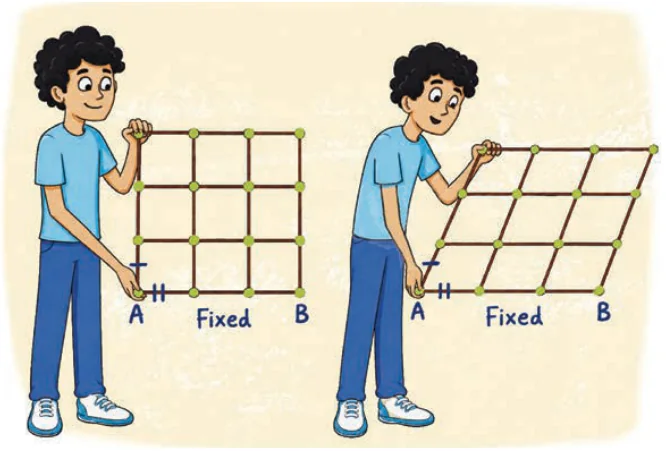

Quadrilaterals, which we also call 4-gons, occur everywhere in daily life. For example, we often see flooring made of square tiles. We say that the floor has been ‘tiled’ using those squares.
Recall that tiling the plane means covering it with copies of the given shape or shapes without gaps or overlaps. Tiling the plane with a rectangle is easy, but it seems difficult with an irregular quadrilateral. We will answer the above question at the end of the chapter (can you do it now?) and understand the answer using what we learn in this chapter. However, to start with, we will discuss a simple new example of a tiling.
Imagine that tiling with rectangles is done using a grid of two sets of long wooden sticks, one set horizontal and the other set vertical. See Fig. 12.1A.

These sticks are pinned together at each intersection point such that they are free to rotate about those points. Now suppose you pick up this grid. You hold the bottom stick fixed with one hand and push the vertical side with the other. See Fig. 12.1B. Each set of parallel lines will stay parallel but the angle between the two sets will no longer be \(90^\circ\). Thus we see that the plane can be tiled using copies of any fixed parallelogram.
In this chapter, we will ask and answer several questions about quadrilaterals, paying particular attention to parallelograms. We will investigate their properties, examine ways to recognise them, and see important applications in geometry. At the end, we will answer the question above about whether one can tile the plane with a given quadrilateral.